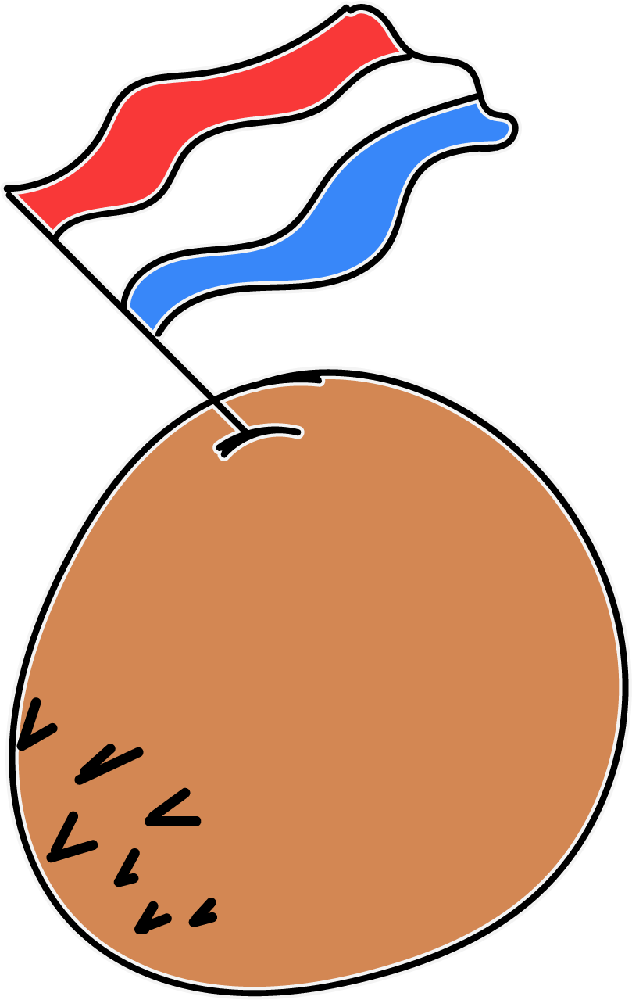

Middle Feast
Ingredients: Pearl couscous 10 g| ras el hanout pulled chicken 20 g | roasted pumpkin 2 g | marinated chickpeas 5 g |hummus 2 g |pickled red onion 4 g | spring onion | feta crumble | smoked almonds | harissa-tahini dressing. Vegan alternative: vegan feta & falafel.
Veggie Shrimps
Ingredients: Spicy Chick sauce, plant based shrimp 10 g, chives, spring & crispy onion mix 4 g.
Mushroom Bitterballen

Ingredients: 1 tablespoon oil 400 g white mushrooms | chopped into cubes no larger than 1 cm | 3 cloves of garlic | minced 1 teaspoon dried thyme | a pinch of salt & black pepper. 4 tablespoons oil (preferably coconut oil) or margarine | 60 g plain flour | 500 ml (2 generous cups) salted vegetable stock | 1 tablespoon finely chopped fresh parsley | a pinch of nutmeg